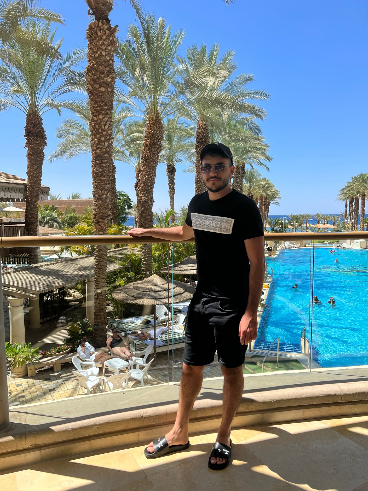

MyResume
Matan Nahmany
software Developer

Summary
Highly self-motivated junior developer looking for an opportunity to contribute to
institutions by implementing concepts, knowledge and methodologies learn
thereby adding value to the organization.
Ability to apply theoretical concepts in the practical world.
Flexible and adaptable to demands of changing work environments.
Team player and independently responsible.
Work experirnce
Sep 2017- Feb 2018
-
Ort-Danciger
- Teacher assistant in Math, English and Literature.
Feb 2018- Sep 2020
-
Military Service
- Full service at Elyakim base as a general soldier.
Sep 2017- Feb 2018
-
Elbit Systems
- Conducted testing and troubleshooting to identify and
resolve issues.
Education
- 2014-2017
- High school – ORT Danciger school, Kiryat Shmona.
Electronics and physics.
- March 2021- Present
- B.sc in Computer Science- Tel-Hai College
- Academic Credits :58/120
- Average Grade: 92
Skills
- Python
- Java
- C++
- C
- Linux
- Assembly for MIPS
Languages
Hebrew-Native
English-Advenced